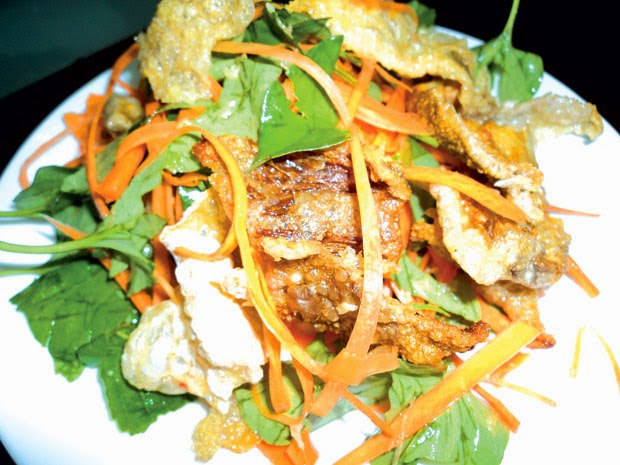

Gỏi da cá

Nguyên Liệu:
– Da cá nhám khô: 150g
– Xoài xanh: 1 quả
– Cà rốt: 1 củ
– Hành tây: 1 củ
– Cần tây: 2 cây
– Đậu phộng rang: 2 chén nhỏ
– Bánh đa nướng: 2 cái
– Hoa chuối bào: 100g
– Rau tía tô: 1 mớ
– Rau răm: 1 mớ
– Gừng: 2 củ
– Rượu trắng: 30ml
– Tỏi: 1 củ
– Chanh: 1 quả
– Dầu ăn: 15ml
– Nước mắm: 5ml
– Ớt sừng đỏ: 2 quả
Cách làm:
Bước 1:
- Đầu tiên, các bạn hòa nước với gừng, chanh tươi, rượu trắng rồi cho cho cá vào ngâm khoảng 24 giờ cho sạch mùi tanh.
– Sau đó, vớt cá ra nạo bỏ sạch sớ thịt còn bám trên da cá. Cho cá vào luộc cùng với gừng, rượu khoảng 5-10 phút. Vớt da
cá ra rồi bóp sạch nhiều lần với nước sạch để khử mùi tanh và để cho ráo nước.
– Cà rốt gọt vỏ, bào sợi. Tỏi bóc vỏ băm nhuyễn. Rau răm rửa sạch, tía tô rửa để ráo nước và thái nhỏ. Gừng cắt chỉ.
– Hoa chuối bào nhỏ, rửa sạch và để ráo nước. Gọt vỏ xoài xanh, rửa sạch, để ráo, cắt sợi dày 5mm. Hành tây bóc vỏ.
Cần tây bỏ lá già, rửa sạch và thái sợi.
Bước 2:
- Cắt miếng da cá dài khoảng 5cm. Bắc chảo lên đun nóng dầu ăn, sau đó cho tỏi băm và gừng thái chỉ vào phi thơm, cho cá vào xào nhanh
tay. Tiếp theo, cho rượu vào đào với lửa lớn để khử mùi tanh.
– Cho nước mắm vào xào thơm, khi thấy da cá thấm đều gia vị thì tắt bếp. Sau đó, cho da cá ra bát to và để nguội.
Bước 3:
- Tiến hành pha nước trộn gỏi da cá: Hòa tan nước cốt chanh, đường, muối cùng nước mắm vào khuấy đều tay. Nêm nếm gia vị vừa ăn
rồi cho tỏi, ớt và gừng băm nhuyễn vào khuấy đều.
Bước 4:
- Trộn gỏi: Cho cà rốt, hành tây, xoài, cần tây, rau răm, tía tô, hoa chuối, ớt thái sợi và da cá vào bát to, sau đó từ từ rưới
nước trộn gỏi vào trộn đều cho ngấm gia vị.
– Trình bày: Cho gỏi da cá ra đĩa, rắc đậu phộng lên trên, dọn ăn kèm với bánh đa và nước mắm chua ngọt.